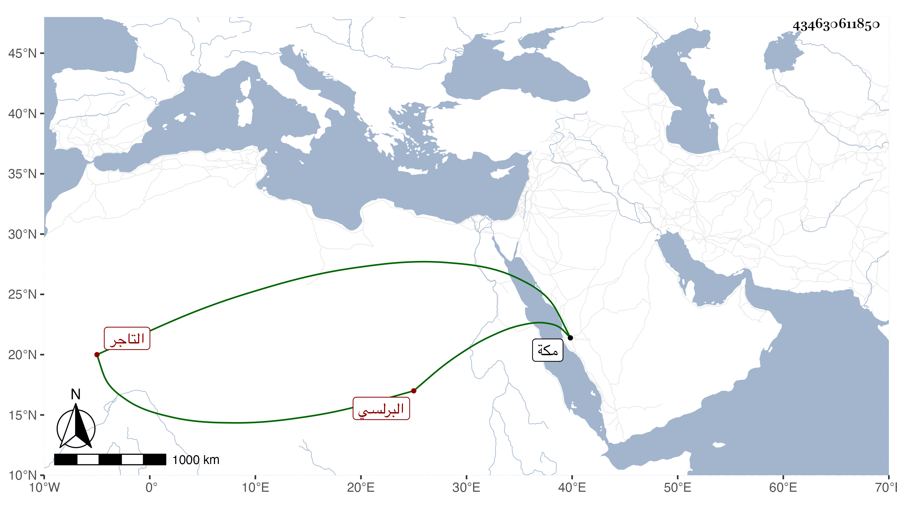

0902Sakhawi.DawLamic.ITO20230111-ara1.EIS1600.434630611850
Biography ID: 434630611850
1080
محمد بن أحمد بن عبد الوهاب الشمس أبو عبد الله البرلسي التاجر ويعرف بابن وهيب ، ممن صحب الشهاب بن الأقيطع وأبا العباس بن الغمري وحج هو وإياه في موسم سنة ثلاث وتسعين وجاور التي تليها فلازمني وسمع مني أشياء بل أحضر ولده علي وأسمع ابن أخيه محمد بن عبد الرحمن وكتبت له كراسة واستمر بمكة بعدي حتى عاد في البحر في أول سنة ست وتسعين ، ولم يلبث أن رجع في البحر أيضا ولقيني في موسمها وبعده صرف الله عنه من يؤذيه .
